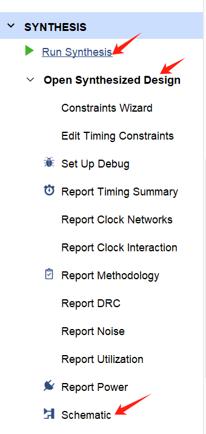
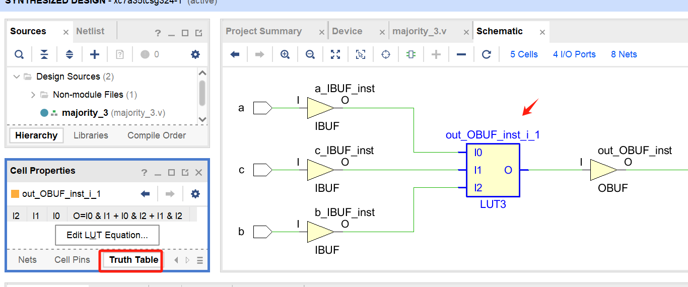
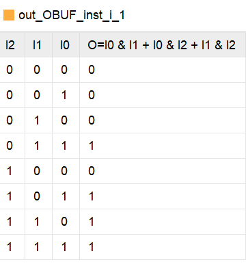
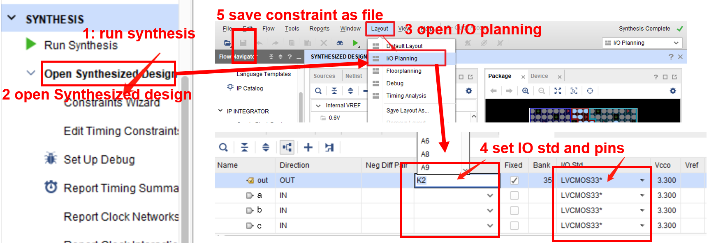
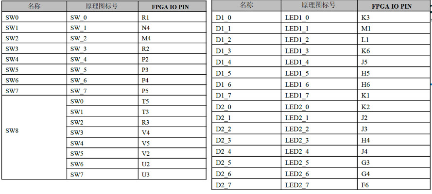

数字逻辑：数据流建模与FPGA验证
实验目标
- 掌握 Verilog 数据流建模方式（连续赋值
assign） - 掌握编写简单的 testbench 进行仿真验证
- 了解数据流建模与结构建模（门级原语）的区别
- 掌握 FPGA 引脚设置及上板验证流程
1. 数据流建模 (Dataflow Modeling)
1.1 什么是数据流建模？
数据流建模是一种描述电路输入与输出之间逻辑关系的方式，使用连续赋值语句（assign）。
它抽象了底层门级结构，直接使用布尔表达式或运算符来描述功能，适合描述组合逻辑电路。
1.2 连续赋值 assign
- 语法：
assign wire_类型信号 = 表达式; - 特点：
- 赋值目标必须是
wire类型（不能是reg） - 只要等号右边任何变量发生变化，左边立即被更新（模拟了组合逻辑的实时性）
- 多个
assign语句并行执行，与书写顺序无关
1.3 常用运算符
数据流建模中常用的运算符：
| 运算符类型 | 符号 | 示例 |
|---|---|---|
| 按位逻辑 | ~、&、|、^ |
y = a & b; |
| 逻辑运算 | !、&&、|| |
y = a && b; |
| 算术运算 | +、-、*、/ |
sum = a + b; |
| 关系运算 | >、<、>=、<= |
gt = a > b; |
| 等式运算 | ==、!= |
eq = a == b; |
| 条件运算（三目） | ? : |
y = sel ? a : b; |
| 拼接运算符 | {} |
{cout, sum} = a + b; |
位运算与逻辑运算区别
- 逻辑运算符 (
!,&&,||) 的有效输出永远是 1 位（0或1），常用于条件判断（如if、while）。 - 位运算符 (
~,&,|) 对操作数的每一位独立运算，输出位宽与操作数相同，常用于数据组合逻辑。
| a | b | a | b | a || b | a & b | a && b | ~a | !a |
|---|---|---|---|---|---|---|---|
| 2'b01 | 2'b10 | 2'b11 | 1'b1 | 2'b00 | 1'b1 | 2'b10 | 1'b0 |
| 2'b01 | 2'b11 | 2'b11 | 1'b1 | 2'b01 | 1'b1 | 2'b10 | 1'b0 |
| 2'b00 | 2'b01 | 2'b01 | 1'b1 | 2'b00 | 1'b0 | 2'b11 | 1'b1 |
1.4 数据流建模示例：3 输入多数表决器
设计一个 3 输入多数表决器：当三个输入中有两个或以上为 1 时，输出为 1。
逻辑表达式：F = ab + ac + bc, 设计如下：
// 3-input majority voter (数据流描述)
module majority_3 (
input a, b, c,
output out
);
assign out = (a & b) | (a & c) | (b & c);
endmodule
注意：优先级顺序：
()>~>&>|
举例：表达式 F= a(b‘+c)，对应verilog:
assign F = a & (~b | c);
2. 编写 Testbench 进行仿真
2.1 Testbench 基本结构
testbench 是用来测试设计模块的仿真环境，它没有输入输出端口，内部实例化被测模块，并产生激励信号。
- 模块定义：testbench 是一个没有输入输出端口的顶层模块。
- 信号声明：将待测模块的输入声明为
reg类型（用于产生激励），输出声明为wire类型（用于监测响应）。 - 实例化待测模块：实例化待测模块，并取好示例名，例如DUT，并将 testbench 中声明的信号连接到 DUT 的对应端口。
- 产生激励：在
initial或always块中生成测试向量，常用循环、延时等方式（本节课仅使用initial）。 - 结果监测：使用
$display、$monitor等系统任务打印输出，或用波形观察。
2.2 testbench 样例
以下是对应 majority_3 模块的 testbench 模板：
`timescale 1ns/1ps
module tb_majority_3();
// 声明信号（与待测模块端口对应）
reg a, b, c;
wire out;
// 实例化被测模块
majority_3 uut (
.a(a),
.b(b),
.c(c),
.out(out)
);
// 产生激励
initial begin
// 在这里给输入赋值
end
// 监控输出（可选）
initial begin
$monitor(...);
end
endmodule
2.3 产生激励的常用方法
- 直接赋值：用
#延时依次改变输入
initial begin
a = 0; b = 0; c = 0;
#10;
a = 0; b = 0; c = 1;
#10;
a = 0; b = 1; c = 0;
#10;
// ... 覆盖所有组合
$finish;
end
- 循环自动遍历（适合少量变量）： Verilog 提供多种循环语句，下面给出三种常用写法。
1. for 循环（最常用）
integer i;
initial begin
for (i = 0; i < 8; i = i + 1) begin
{a, b, c} = i; // 拼接赋值，自动遍历 000~111
#10;
end
$finish;
end
2. while 循环
integer i;
initial begin
i = 0;
while (i < 8) begin
{a, b, c} = i;
#10;
i = i + 1;
end
$finish;
end
3. repeat 循环（固定次数）
integer i;
initial begin
i = 0;
repeat(8) begin
{a, b, c} = i;
#10;
i = i + 1;
end
$finish;
end
注意**：
repeat只执行固定次数，通常用于不需要循环变量的场景；若需计数，仍需配合额外变量。
2.4 常用系统任务（仅用于仿真）
$display("格式字符串", 变量1, 变量2, ...);
在仿真时打印信息，类似于 C 的printf，每次执行都会打印。$monitor("格式字符串", 变量1, 变量2, ...);
持续监控变量，当其中任何一个发生变化时自动打印一次。通常放在单独的initial块中。$finish;
结束仿真，避免默认仿真时间过长，难以观察波形。
示例：
initial begin
$monitor("time=%t a=%b b=%b c=%b out=%b", $time, a, b, c, out);
end
2.5 完整 testbench 示例（针对 majority_3）
`timescale 1ns/1ps
module tb_majority_3();
reg a, b, c;
wire out;
integer i;
// 实例化被测模块
majority_3 uut (
.a(a),
.b(b),
.c(c),
.out(out)
);
initial begin
$monitor("time=%3d: a=%b b=%b c=%b => out=%b", $time, a, b, c, out);
for (i = 0; i < 8; i = i + 1) begin
{a, b, c} = i;
#10;
end
$finish;
end
endmodule
3. 数据流建模 vs 结构建模（门级原语）
3.1 复习：结构建模（使用 primitive gate）
Verilog 提供了内置的基本门原语（如 and、or、xor 等），通过实例化这些门来连接电路，称为结构建模。
示例：用门原语实现多数表决器
module majority_3_gate (
input a, b, c,
output out
);
wire w1, w2, w3;
and (w1, a, b);
and (w2, a, c);
and (w3, b, c);
or (out, w1, w2, w3);
endmodule
3.2 代码风格对比
下表展示了两种建模方式的不同代码风格（以多数表决器为例）：
| 数据流建模 | 结构建模（with primitive） |
|---|---|
| 直接表达式 | 基本门实例化 |
| verilog assign out = (a & b) | (a & c) | (b & c); |
verilog wire w1, w2, w3;and (w1, a, b); and (w2, a, c); and (w3, b, c); or (out, w1, w2, w3); |
| 分步中间信号（效果相同） | 门顺序可调（效果相同） |
| verilog wire and_ab, and_ac, and_bc; assign and_ab = a & b; assign and_ac = a & c; assign and_bc = b & c; assign out = and_ab | and_ac | and_bc; |
verilog wire w1, w2, w3; or (out, w1, w2, w3); and (w1, a, b); and (w2, a, c); and (w3, b, c); |
3.3 对比
| 特性 | 数据流建模 (assign) | 结构建模 (门原语) |
|---|---|---|
| 抽象级别 | 较高，接近逻辑表达式 | 较低，接近晶体管/门级连接 |
| 代码简洁性 | 简洁，一行表达式即可 | 繁琐，需实例化多个门 |
| 可读性 | 好，直接体现功能 | 差，需要理解门级连接 |
| 设计效率 | 高，适合复杂组合逻辑 | 低，仅适合简单或教学示例 |
| 综合结果 | 综合工具优化 | 基本对应指定门，可控但效率低 |
| 典型应用 | 实际工程中的组合逻辑 | 教学演示、定制特殊门结构 |
结论：实际工程中几乎全部使用数据流或行为级建模(后面会学)，门级原语主要用于教学或特殊定制需求。
4. 综合
4.1 什么是综合
综合（Synthesis）是将硬件描述语言（HDL）代码转化为具体逻辑电路（如门级网表）的过程。Vivado 的综合工具会分析你写的 Verilog 代码（如 assign 语句），推断出相应的逻辑门和连接关系，并生成一个与 FPGA 内部资源（查找表 LUT、触发器 FF 等）匹配的网表文件。
综合的用途：
- 验证代码能否被综合工具接受，并生成实际的硬件结构。
- 查看综合后的电路图（Schematic），帮助你直观理解代码对应的硬件实现。
- 分析资源利用率、时序预估等（本课程暂不深入）。
4.2 如何查看综合后的电路图？
- 点击 Run Synthesis 进行综合。
- 综合成功后，点击 Open Synthesized Design 打开综合后的设计。
- 在打开的 Schematic 窗口中，可以看到由逻辑门、LUT、触发器组成的电路结构。
- 你可以放大查看细节，观察输入信号如何经过逻辑单元产生输出。
- 对于组合逻辑，通常会以 LUT（查找表） 的形式实现。

如何查看模块的真值表或逻辑表达式？
- 在原理图中，点击某个 LUT 单元（通常标有
LUT2、LUT3等），会在属性窗口中显示其 LUT equation。LUT equation 是 Vivado 综合后推断出的逻辑表达式（可能与你的assign语句略有不同，但功能等价）。

通过观察原理图和 LUT 属性，你可以验证综合结果是否与预期一致，并深入理解 Verilog 代码是如何映射到 FPGA 硬件上的。

注意：综合后的原理图只是逻辑映射的结果，并非最终的布局布线。布局布线后的电路会更复杂，但逻辑功能不变。
5. 引脚设置与上板流程（以 Vivado 为例）
注意：设置引脚之前需要先进行综合
4.1 编写引脚约束
方法一：使用 Vivado 图形界面（I/O Planning）
- 点击Run Synthesis进行综合
- 在完成综合（Synthesis）后，点击 Open Synthesized Design。
- 接着点击vivado顶部工具栏的 I/O Planning 标签（或选择 Layout → I/O Planning）。
- 此时会打开 I/O Ports 窗口，列出所有顶层端口。
- 在 Package Pin 列，双击对应端口的单元格，输入物理引脚编号。
- 在 I/O Std 列，选择 LVCMOS33（根据板卡电压选择）。
- 设置完成后，保存约束：File → Save Constraints，选择或新建一个 XDC 文件，将当前分配写入。
- 也可以直接点击工具栏的 Write XDC 按钮生成约束文件。
提示：引脚编号需查阅开发板的原理图或官方文档。例如 Ego1开发板文档详见课程blackboard站点Reference。如果输入后发现找不到引脚编号，请确认创建项目时FPGA型号是否选择正确

方法二：手动编写 XDC 文件 （回顾）
在工程中添加一个新的约束文件（xxx.xdc），输入并修改以下内容，约束的顺序不影响效果。
xdc文件示例：问号处需根据实际板卡修改引脚号
## 输入引脚 (拨码开关)
set_property PACKAGE_PIN ?? [get_ports {a}]
set_property IOSTANDARD LVCMOS33 [get_ports {a}]
set_property PACKAGE_PIN ?? [get_ports {b}]
set_property IOSTANDARD LVCMOS33 [get_ports {b}]
set_property PACKAGE_PIN ?? [get_ports {c}]
set_property IOSTANDARD LVCMOS33 [get_ports {c}]
## 输出引脚 (LED)
set_property PACKAGE_PIN ?? [get_ports {out}]
set_property IOSTANDARD LVCMOS33 [get_ports {out}]
参考：EGO1 开发板引脚请参考开发板技术手册，或直接查看开发板外设附近的引脚标签。如果在图形化界面设置中输入引脚编号发现该编号未出现在下拉菜单中，请确认创建项目时FPGA芯片型号是否选择正确


4.2 实现与生成比特流
- 点击 Run Implementation 进行布局布线。实现完n成后可查看时序报告。
- 最后点击 Generate Bitstream 生成比特流文件（
.bit）。生成成功后，会弹出完成对话框。 - 也可以直接点击Generate Bitstream，会自动进行Synthesis，Implementation和Generate Bistream全流程，中间无需人工干预。
4.3 下载到 FPGA 开发板
- 连接开发板并上电，确保下载线（如 USB-JTAG）已连接。
- 点击 Open Hardware Manager → Auto Connect，Vivado 会自动识别开发板。
- 在 Hardware 窗口中，选择 Program Device。
- 在弹出的对话框中，确认比特流文件路径正确，点击 Program。
- 下载完成后，拨动开关，观察 LED 是否按多数表决逻辑亮灭。
5. 练习题
练习：使用 Dataflow 设计方法（assign 语句）实现一个全加器。
-
模块名：
FullAdder -
输入：
a,b,cin -
输出：
s,cout -
功能：如电路图所示。
-
要求：使用
assign和运算符实现。

步骤1：编写design
- 写出cout和s的表达式
- 使用assin语句进行设计
步骤2：编写 testbench 验证
- 在纸上画出电路真值表
- 与仿真结果进行对比，仿真方式可选择monitor仿真log或直接波形图对比方式
步骤3：综合
- 在Vivado中点击 Run Synthesis，等待综合完成。如果出现错误，根据错误提示修改代码。
步骤4：引脚设置
- 将练习1的设计添加引脚约束（例如
a/b/cin用3个拨码开关，s/cout用 LED）。 - 通过 XDC 文件编辑或 I/O Planning 图形界面完成约束（选择一种方式）
步骤5：生成比特流和上板验证
- 点击Generate Bistream，生成比特流并下载到开发板，验证功能。
附录：常见问题
- 问：
assign左边可以是reg类型吗？
答：不可以，必须是wire或wire相关类型（如tri）。 - 问：仿真时波形为直线？
答：检查 testbench 中是否加了$finish，或仿真时间是否过长，可点击zoom fit以及zoom in将波形展示调整到合适位置。 - 问：上板后 LED 不亮或不受控？
答：检查引脚约束是否正确，下载是否成功，开发板电源是否打开。 - 问：在 I/O Planning 中找不到端口？
答：必须先运行综合（Synthesis），打开综合后的设计才能看到 I/O 端口列表。